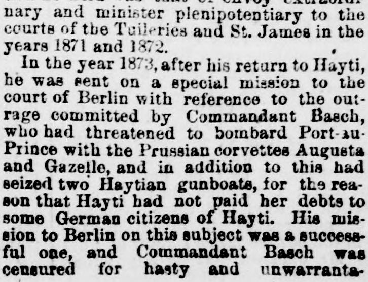

In the year 1879, after his return to Hayti, he wasEn el año 1879, después de su retorno a Haití, fue
New Orleans Republican. New Orleans, La, May 23, 1875. Page 5. Published by S.L. Brown & Co. A weekly newspaper, 1867–1878.New Orleans Republican. New Orleans, La, 23 de mayo de 1875. Página 5. Publicado por S.L. Brown & Co. Periódico semanal, 1867–1878. View the originalVer el original

The New Orleans Republican detailed the career of a prominent Haitian figure who successfully settled a diplomatic dispute in Berlin and obtained a government concession to construct a railroad from Port-au-Prince to the Dominican border. The paper also reported the suicide of Haitian General Montplaisir Pierre following his capture during an abortive revolutionary uprising against the government.El New Orleans Republican detalló la trayectoria de una prominente figura haitiana que resolvió con éxito una controversia diplomática en Berlín y obtuvo una concesión gubernamental para construir un ferrocarril desde Puerto Príncipe hasta la frontera dominicana. El diario también dio cuenta del suicidio del general haitiano Montplaisir Pierre tras su captura durante un frustrado levantamiento revolucionario contra el gobierno.
FULL TEXT:TEXTO COMPLETO:
New Orleans Republican May 23, 187523 de mayo de 1875
General Brutus Brice was a man of great repute and intelligence. He was a son of a distinguished general under the Emperor Soulouque, bearing the same name. The subject of this sketch was born at Miragoane, in Hayti. At an usually early age he graduated as bachelor of arts in the National College of Port-au-Prince. Shortly afterward he became one of President Geffrard's private secretaries. In the year 1860 he became one of President Salnave's aids-de-camp with the honorary rank of lieutenant colonel. Shortly afterward he was elected deputy to the Legislature, representing Port-au-Prince, and became one of the most prominent leaders of the opposition against Salnave. In 1868 he commanded the revolutionary forces at Jeremie, and withstood a siege of a year's duration, the town being bombarded by the Haytian fleet. After the revolutionary forces became victorious he was elected to the position of commandant-in-chief, and with that grade effected a landing at Port-au-Prince at the head of the troops and captured the capital city of Port-au-Prince in December, 1869. In consideration of his brilliant services he was elected Speaker of the Legislature. The next position he held was that of envoy extraordinary and minister plenipotentiary to the courts of the Tuileries and St. James in the years 1871 and 1872.El general Brutus Brice fue un hombre de gran reputación e inteligencia. Era hijo de un distinguido general bajo el Emperador Soulouque, con el mismo nombre. El sujeto de este bosquejo nació en Miragoane, en Haití. A una edad inusualmente temprana se graduó de bachiller en artes en el Colegio Nacional de Puerto Príncipe. Poco después se convirtió en uno de los secretarios privados del presidente Geffrard. En el año 1860 se convirtió en uno de los ayudantes de campo del presidente Salnave con el rango honorario de teniente coronel. Poco después fue elegido diputado a la Legislatura, representando a Puerto Príncipe, y se convirtió en uno de los líderes más prominentes de la oposición contra Salnave. En 1868 comandó las fuerzas revolucionarias en Jeremie, y soportó un sitio de un año de duración, siendo el pueblo bombardeado por la flota haitiana. Después de que las fuerzas revolucionarias resultaron victoriosas fue elegido a la posición de comandante en jefe, y con ese grado efectuó un desembarco en Puerto Príncipe a la cabeza de las tropas y capturó la ciudad capital de Puerto Príncipe en diciembre de 1869. En consideración de sus brillantes servicios fue elegido Presidente de la Legislatura. La siguiente posición que ocupó fue la de enviado extraordinario y ministro plenipotenciario ante las cortes de las Tullerías y de St. James en los años 1871 y 1872.
In the year 1873, after his return to Hayti, he was sent on a special mission to the court of Berlin with reference to the outrage committed by Commandant Basch, who had threatened to bombard Port-au-Prince with the Prussian corvettes Augusta and Gazelle, and in addition to this had seized two Haytian gunboats, for the reason that Hayti had not paid her debts to some German citizens of Hayti. His mission to Berlin on this subject was a successful one, and Commandant Basch was censured for hasty and unwarrantable conduct. Shortly after his return he was again elected deputy for Port-au-Prince. About this time he obtained a concession from the government for the construction of a railroad from Port-au-Prince to the Dominican frontier. He also erected a large manufactory in the neighborhood of the capital for the extract of dyes from logwood, to compete with the three great similar establishments in the United States. Since the advent of President Domingue to power, the General retired to private life, and has been known as an avowed enemy of Domingue, although he took an active part in the election and held a prominent position in the army.En el año 1873, después de su regreso a Haití, fue enviado en una misión especial a la corte de Berlín con referencia al ultraje cometido por el comandante Basch, quien había amenazado con bombardear Puerto Príncipe con las corbetas prusianas Augusta y Gazelle, y además de esto había capturado dos cañoneras haitianas, por la razón de que Haití no había pagado sus deudas a algunos ciudadanos alemanes de Haití. Su misión a Berlín sobre este tema fue exitosa, y el comandante Basch fue censurado por conducta precipitada e injustificable. Poco después de su regreso fue de nuevo elegido diputado por Puerto Príncipe. Por este tiempo obtuvo una concesión del gobierno para la construcción de un ferrocarril desde Puerto Príncipe hasta la frontera dominicana. También erigió una gran manufactura en la vecindad de la capital para la extracción de tintes del palo de tinte, para competir con los tres grandes establecimientos similares en los Estados Unidos. Desde el advenimiento del presidente Domingue al poder, el General se retiró a la vida privada, y ha sido conocido como un enemigo declarado de Domingue, aunque tomó parte activa en la elección y ocupó una posición prominente en el ejército.
SKETCH OF GENERAL PIERRE.BOSQUEJO DEL GENERAL PIERRE.
General Montplaisir Pierre, of the Republic of Hayti, who committed suicide on May 3, at Port-au-Prince, in Hayti, after being captured in a revolutionary uprising on that date by the government troops, was a native of Anse-a-Veaux, in the south side of Hayti. He was formerly minister of war under President Nessage Saget, and was an old soldier. Upon the occasion of the recent presidential election in Hayti he ran against President Domingue, the present chief magistrate, and was largely defeated. He has been Speaker of the Assembly and was a man of literary tastes and had traveled considerably in this country and Europe. During the presidential terms of Salnave and Geffrard he held important offices.—New York Herald.El general Montplaisir Pierre, de la República de Haití, quien se suicidó el 3 de mayo, en Puerto Príncipe, en Haití, después de ser capturado en un levantamiento revolucionario en esa fecha por las tropas del gobierno, era nativo de Anse-a-Veaux, en el lado sur de Haití. Fue anteriormente ministro de guerra bajo el presidente Nissage Saget, y era un viejo soldado. En ocasión de la reciente elección presidencial en Haití se presentó contra el presidente Domingue, el actual magistrado jefe, y fue ampliamente derrotado. Ha sido Presidente de la Asamblea y era un hombre de gustos literarios y había viajado considerablemente en este país y Europa. Durante los períodos presidenciales de Salnave y Geffrard ocupó importantes cargos.—New York Herald.
[Editor's note: the paper writes of the east as part of Hayti. From 1822 to 1844 the Dominican Republic was held by Haitian military occupation, against its people's will; it restored its independence on February 27, 1844.][Nota del editor: el periódico habla del este como parte de Haití. De 1822 a 1844 la República Dominicana estuvo bajo ocupación militar haitiana, contra la voluntad de su pueblo; restauró su independencia el 27 de febrero de 1844.]